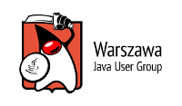
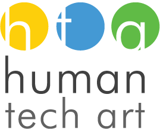
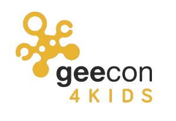

Devoxx4Kids to wspaniała szansa dla najmłodszych na pierwszy kontakt z programowaniem poprzez zabawę. TODO: Uzupełnij.
Misja
Celem naszego wydarzenia jest pokazanie najmłodszemu pokoleniu, jak sterować i bawić się komputerami. TODO: Uzupełnij.
Program
Wydarzenie jest skierowane dla dzieci w wieku od 8 do 15 lat. Dla każdego z przedziału wiekowego przygotowana jest oddzielna ścieżka. Więcej informacji można znaleźć na stronie z agendą.
Rejestracja
Rejestracja rozpocznie się niebawem.
Miejsce i czas
Wydarzenie odbędzie się 7 czerwca w Warszawie w szkole przy ulicy wiśniowej. Więcej informacji można znaleźć na stronie miejsce i czas.
Kontakt i wsparcie
Pytania lub pomysły ? Napisz do nas wjug-d4k@googlegroups.com, a postaramy się rozwiązać twoje problemy.
Sponsorzy
To wydarzenia nie mogło by się odbyć bez drobnego wsparcia poniższych firm. Wielkie dziękujemy !

Partnerzy
Przygotowanie takiego wydarzenia, to nie tylko nasza praca, ale pomoc też wielu zaprzyjaźnionych inicjatyw.
  